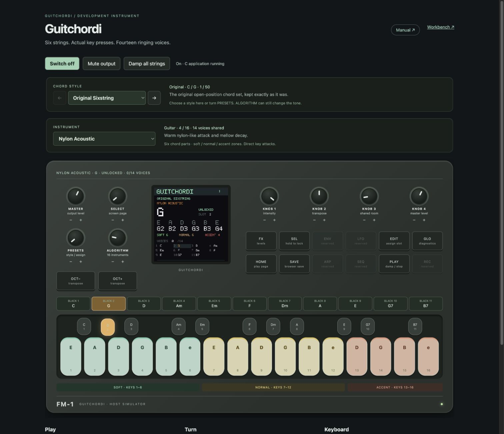
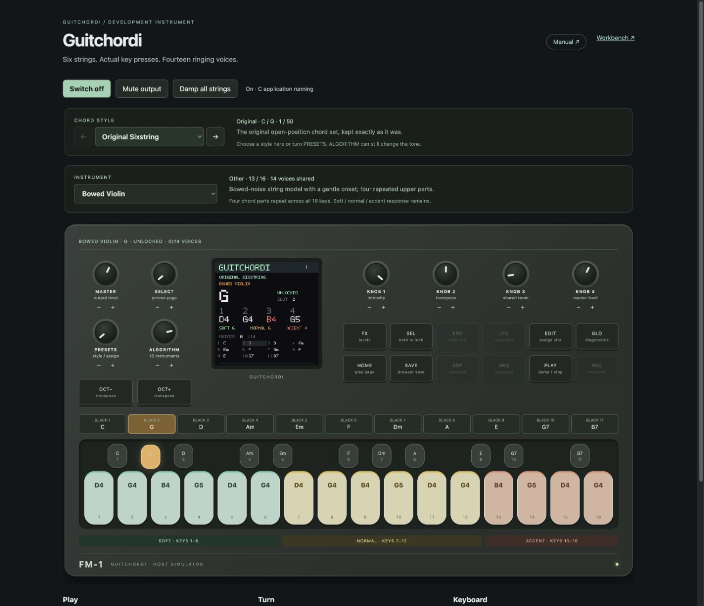
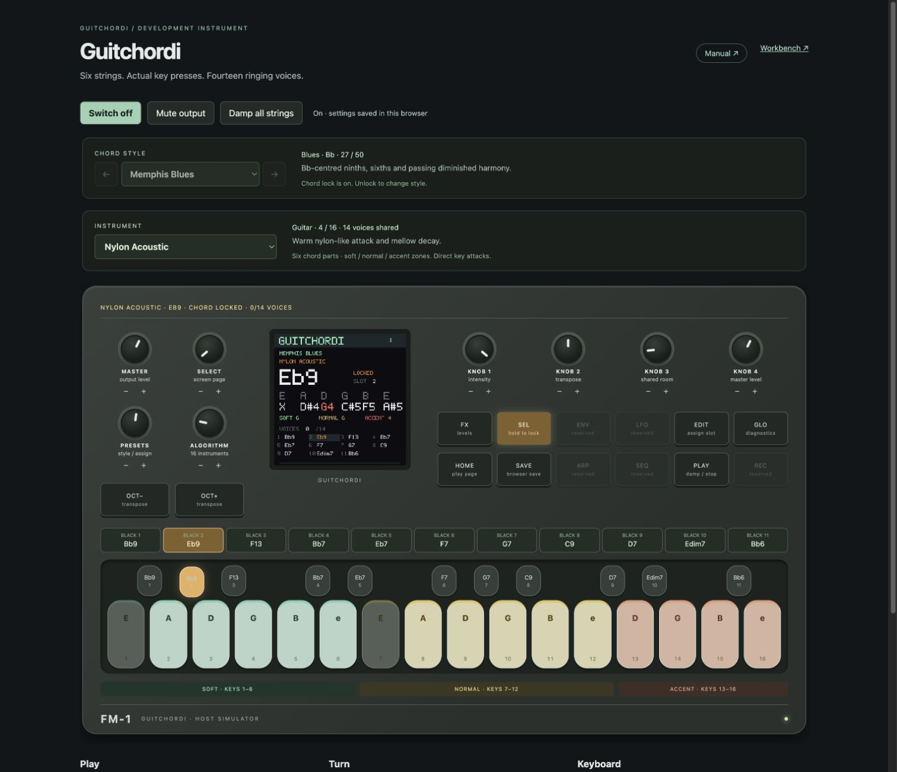

Guitchordi
16 instruments. 50 chord styles. Sixteen direct contacts and fourteen ringing voices.
This guide covers the browser instrument and current FM-1 beta controls. The quiet beta works on the developer’s FM-1; broader hardware qualification is ongoing. Standard EADGBE remains the guitar default.
Start playing

Open and switch on
Open the browser instrument, then click Switch on. Start with a comfortable MASTER level. Standard EADGBE remains the default guitar reference.
Choose a chord, then play
The eleven black keys choose chord slots. The strip above them shows every chord at all times; the LCD shows the selected chord. Tap or sweep the sixteen light keys to make sound. Only contacted keys attack; muted parts stay silent.
Let it ring, or stop it
Releasing a key leaves its natural, finite tail. Click Damp all strings, press Escape, or use PLAY to stop ringing notes. Mute output silences the speaker path while the instrument continues running.
Change instrument and style
1. Choose the chord style first
Use CHORD STYLE or turn PRESETS. There are fifty banks, including jazz, lo-fi, rock, blues, pop, soul and folk. A style loads its factory chords. Instrument, tuning, intensity and room remain independent.
2. Choose the sound
Use INSTRUMENT or turn ALGORITHM. The sixteen choices include Wood/Wire/Glow; nylon, steel, jumbo, palm-muted, clean, jazz, crunch and heavy guitars; harp, bowed violin, pizzicato cello, bass and dulcimer. Instrument changes affect future key contacts and create no attack.
3. Keep your combination
Press SAVE after choosing your bank, instrument and settings. In the browser this persists across reloads. Changing style again loads that bank's factory chords while retaining the instrument and tuning.
Violin notes and playing zones

Green: soft / keys 1-6
Gentle attacks. Amber keys 7-12 give normal attacks; coral keys 13-16 give accented attacks. The coloured key tops, note lettering, active highlights and zone legend stay consistent. This is a simulated contact intensity, not measured pressure or bow speed.
Four parts across sixteen contacts
Violin and cello repeat four upper chord parts; bass repeats four lower parts. The violin key labels now show the actual sounding note and octave, such as D4. The same pitch can appear in several zones: play it softly, normally or with an accent. Hover for the note, part and physical key number.
A bowed colour with a finite tail
Bowed Violin uses a bounded periodic bow approximation and a gentle onset. Notes are capped at three seconds and releases retain the tail. It is a lightweight synthesis approximation, with no continuous bow-pressure control. The LCD shows note names and colours the last-played part for its zone.
Lock, edit and save

Lock the chord
Hold ENV for three uninterrupted seconds. The lock warms from orange to red as the hold completes. Releasing early cancels. Black keys, chord styles and slot edits are then blocked; instrument, master and transpose remain available. Hold ENV again to unlock.
Edit a chord slot
While unlocked, choose a black-key slot, press EDIT, then turn PRESETS to change its assigned voicing. Press SEL to confirm. Hold EDIT to choose a reset of this slot or all slots with PRESETS, then SEL to confirm; HOME cancels. The black-key labels, chord strip and LCD follow the actual assignment.
Understand SAVE
SAVE stores the active bank, its current slot edits, instrument and settings in this browser. It does not maintain fifty separately edited banks. Loading another style replaces current slots with its factory set. Reload restores the last save; ringing notes and held keys are never saved. Browser saves are specific to the website origin. SAVE on the FM-1 is RAM-only and does not persist across a power cycle.
Controls and keyboard shortcuts
Knobs
MASTER: output level. SELECT: BPM. PRESETS: chord style, or assigned chord while EDIT is active. ALGORITHM: instrument. On Freeplay/FX, K1: intensity (50% standard); K2: transpose; K3: room; K4: saved voicing for the selected slot. In Strum/Arp, K1: pattern; K2: division; K3: gate (FREE default); K4: strum sweep or swing. Strum sweep is INSTANT, then 5-250 ms in 5 ms steps. Drag up/down, scroll, use arrow keys when focused, or press the minus/plus buttons.
Panel buttons
FX toggles tone controls/Home. ARP cycles Freeplay, Strum and Arp. GLO opens globals: K1 gate tails, K2 humanity, K3 tuning, K4 rhythm velocity. Hold GLO for three seconds for reset confirmation; SEL confirms, HOME cancels. HOME returns to play. OCT- and OCT+ transpose by an octave. PLAY damps sound. Hold PLAY five seconds for a hidden instrumental chord loop; tap PLAY again to stop. ENV held three seconds toggles lock. LFO, SEQ and REC are reserved.
Computer keys
String contacts, left to right: A S D F G H J K L ; ' Z X C V B. Chord slots: Q W E R T Y U I O P [. Hold Space with page focus for the three-second ENV lock; Enter is SEL/OK. Escape damps. Focused buttons/keys also support Space or Enter. Repeated keydown events do not create repeated attacks.
Two small details
Switching off pauses audio; switching back on resumes the current session. Reloading boots from your last save. On a phone, landscape gives more room; the device panel can scroll horizontally.
Sound, headroom and troubleshooting
Will the FM-1 sound like this?
The browser and target firmware share the C instrument and fixed-point string model, with the same patch settings and 44.1 kHz design rate. That is a strong basis for the same core timbre. The corrected quiet beta boots on a real FM-1, and its maker reports audio and controls match the browser. Its output ceiling is deliberately conservative. Worst-case CPU load, all-instrument behavior and restoration still need qualification.
Memory fits; CPU is still unknown
Sixteen instruments are selectable patches, sharing fourteen voice slots. They are not sixteen simultaneous engines. The application, display buffers and reserved stacks fit the target linker layout. This is a build-time check. That does not measure real-time audio headroom or stack high-water usage. A 128-frame half-buffer allows about 2.90 ms at 44.1 kHz, including input handling and rendering. Real hardware must meet that deadline under the worst patch/voice load.
Next device checks
Recovery entry and a complete private backup were verified from Felucca. Installation into GuitChordi and an outgoing update have completed on the developer’s FM-1. Measure output rate, render times, missed buffers and stack depth across the instruments before a public release. Device SAVE remains RAM-only; actual restoration is still untested.
If something seems wrong
No sound: switch on, unmute and check MASTER. Missing notes: inspect muted keys and the selected voicing; four-part patches repeat notes. Wrong sound after changing style: reselect INSTRUMENT, then SAVE. Bank will not change: unlock with ENV and leave EDIT if active. Stuck or overly busy tails: Damp all strings or Escape. The simulator requires a 44.1 kHz AudioContext and reports startup failures beside Switch on.